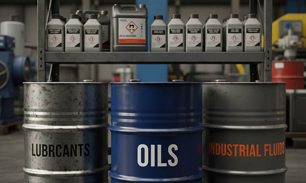

In heavy industry, the presence of oils, hydraulic fluids, and aggressive lubricants is a constant challenge for operational safety and equipment maintenance. In Germany, a powerhouse of fluid technology, as well as in France, Italy, Switzerland, Norway, Austria, Poland, the United Kingdom, and the Benelux countries, industrial facilities rely on machinery that operates under continuous exposure to chemical substances.
From hydraulic power units and lubrication systems to oil-cooled transformers and chemical processing plants, every component must be clearly identified. However, standard labels quickly degrade, peel, or become illegible when saturated with oils. Professional oil-resistant tags, chemically stable rating plates, hydraulic circuit markers, fluid identification labels, and engraved technical data plates are critical for preventing errors, ensuring safety, and maintaining equipment longevity.
At SignXpert, we engineer specialized labeling solutions designed to withstand constant exposure to industrial fluids across the German and European markets.
Fluid Power and Chemical Excellence in Germany and Europe
Germany leads the world in high-performance hydraulic systems and industrial lubricants. Italy and France are key manufacturers of agricultural and construction machinery where fluid power is essential. Norway and the United Kingdom focus on offshore energy systems where salt spray and drilling fluids create a double challenge for durability. Poland and the Benelux region serve as critical hubs for the distribution and assembly of industrial fluid systems.
In these environments, compliance with ISO and DIN safety standards for fluid identification is mandatory. Clear flow direction arrows, valve identification tags, and lubricant specification plates ensure that maintenance teams in Munich, Paris, or Warsaw can operate systems without the risk of cross-contamination or mechanical failure. SignXpert supports fluid technology manufacturers primarily in Germany, with fast and reliable delivery across Europe.
Chemical Resilience: The SignXpert Material Technology
The core requirement for labeling in “oily” environments is non-porous surface integrity. Our two-layer high-tech polymers and anodized materials are engineered to be chemically inert:
- Oil and Lubricant Resistance: Our labels do not absorb fluids. Whether it is hydraulic oil, engine lubricant, or industrial grease, the surface can be wiped clean, leaving the laser-engraved information perfectly intact.
- Solvent and Chemical Stability: Designed to withstand not just the oils themselves, but also the aggressive degreasers and solvents used during industrial cleaning (CIP) and maintenance.
- Laser-Engraved Permanence: Unlike surface-printed labels, our information is etched into the material. It is impossible for oils to “dissolve” the text or for friction to rub off the serial numbers.
Critical Applications: From Hydraulics to Power Transmission
Oils and fluids are the lifeblood of industrial machinery, and their correct identification is a matter of technical necessity.
- Hydraulic Reservoirs & Pumps: Clearly identifying the correct fluid type and pressure ratings is essential to avoid catastrophic system failure.
- Lubrication Points: Permanent markers indicating the specific grease or oil type required for bearings and gears, reducing maintenance errors.
- Coolant & Transmission Systems: In the automotive and machining sectors, clear labeling of cooling circuits prevents overheating and ensures operational safety.
SignXpert utilizes 3M™ High Performance adhesives, specifically selected for their ability to maintain a secure bond even on surfaces that may experience temperature fluctuations and occasional fluid contact, ensuring your identification stays exactly where it’s needed.
Efficiency and Digital Maintenance in Fluid Power
Modern “Smart Factories” in Germany and the UK use digital tracking to manage their fluid systems.
QR code asset tags from SignXpert, integrated into oil-resistant plates, allow technicians to scan a pump or a manifold and instantly access safety data sheets (SDS), oil analysis history, or spare parts catalogs.
Our high-contrast laser engraving ensures that these codes remain scannable even in dark or dirty environments, providing a reliable bridge between physical equipment and digital management systems.
Why SignXpert is the Partner for Fluid Technology in Europe
SignXpert is a specialized supplier of chemically resistant industrial plates, hydraulic labels, oil-stable rating tags, and fluid identification systems.
Our primary focus is the German market, with reliable and fast distribution across France, Italy, Switzerland, the United Kingdom, Norway, Austria, Poland, and the Benelux region.
With our advanced online editor, engineers can design custom labels, import complex technical data for batch production, and select materials specifically tested for the harshest chemical environments.
Choosing SignXpert means investing in a labeling solution that matches the durability of your fluid systems, ensuring clarity, safety, and European compliance in every drop.